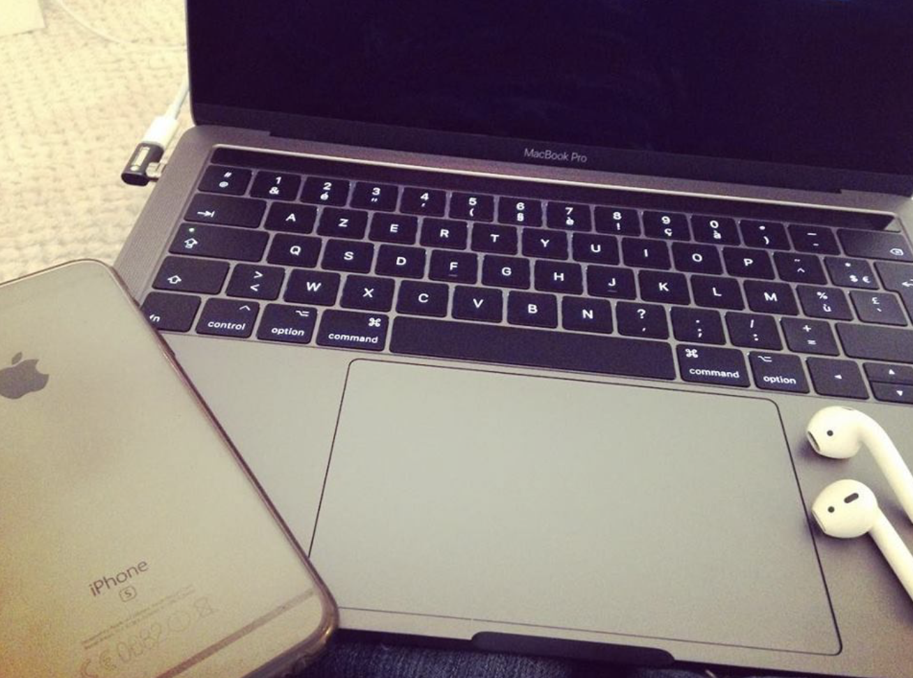

Je m'appelle Johnny. J'effectue une alternance en contrat de professionnalisation pour devenir concepteur et développeur d'applications informatiques. Avant çà, j'étais serveur en restauration, ce qui m'a permis de bouger en Corse et en Provence. J'adore
voyager et encore plus revenir à la maison. Je suis un friand adepte des produits Apple, comme vous pouvez le voir sur l'image ci-dessous.
 Je vous donnerais des informations sur cette renconversion professionnelle dans un prochain article. J'ai créé ce site dans le but de m'exercer mais
aussi de partager des solutions et des bons plans. Il m'a fallu du temps pour le concevoir et il évoluera au fil du temps. Vous pouvez me contacter sur tous sujets en cliquant sur
Contact un peu partout sur le site, en attendant que je mettes un forum d'échanges en place. Je suis également présent sur certains réseaux sociaux que vous trouverez en bas de chaque
page du site. Cliquez directement sur les icônes pour vous rendre sur mes profils.